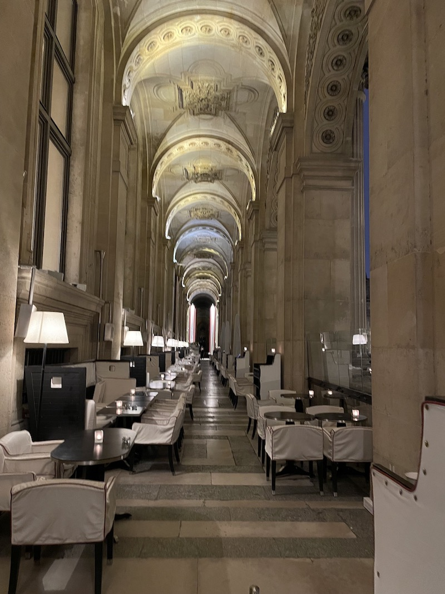
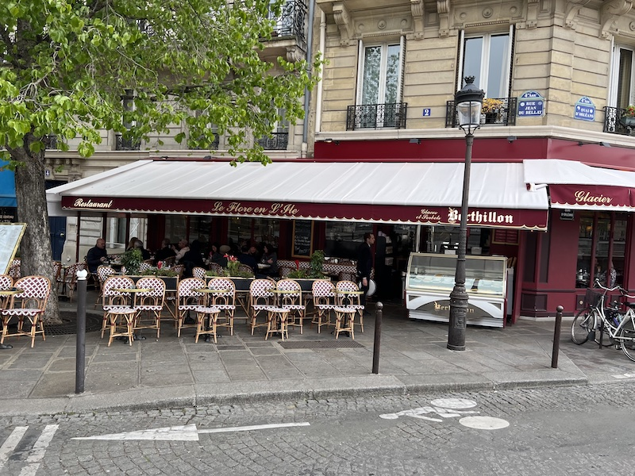

We took our first metro trip with the group, which went smoothly despite being the first public transit trip for many in the group. We traveled from École Militaire to Pont Neuf, from there we walked around central Paris, including Île de la Cité and Luxembourg Gardens.
Next, we toured Île de la Cité and the area around Notre Dame. Unfortunately, we could only see Notre Dame from the exterior because it was still being repaired after the tragic fire in 2019. It was still incredible to see the flying buttresses on the exterior. Instead, we got to visit the stunning Sainte-Chapelle, a royal chapel whose walls are virtually entirely glass, creating a jewel box of tinted glass.
Marie then spoke to the group about the city's literary culture and we stopped by Shakespeare & Co, the legendary English-language bookstore, and passed by the street book vendors known as Les Bookinistes. We also caught a glimpse of the intricate Art Nouveau metro station entrances.
We took a break for lunch on the island Île Sainte Louis. We had lunch on our own at the traditional bistro Le Flore en l'Ile, where we capped our meal with a cone of Berthillon's famous and delicious ice cream! Our hometown, Princeton, is also famous for ice cream, and it was fun to compare. We had another hometown connection on Île Sainte Louis - our neighbor back home had recommended the colorful and trendy clothing boutique "78isl." After our meal, we stopped by, did a little shopping, and had a lovely conversation with the owner. She even wrote us a note thanking our neighbor for the referral.

After lunch, we all walked through the Latin Quarter and learned about the history of the Sorbonne, the University of Paris. We ended the group tour for the day at Luxembourg Gardens. The group strolled the park and admired the statues of queens and the Medici Fountain. Jess marveled at the living ivy garland that lined the path up to the fountain.
For dinner, the two of us had a reservation at Café Marly, a beautiful restaurant tucked into the colonnade of the Louvre courtyard. It was so tucked away, that we couldn't find it and had to stop in a nearby hotel lobby to ask the receptionist for directions. The restaurant was beautiful, and our waiter told us that it was named after the marble Marly horses commissioned by Louis XV, which are now in the sculpture courtyard of the Louvre.
We ended the night by walking to the Paris Opera, which we had seen from afar on the evening bus tour the night before. It was even more spectacular up close and the perfect way to end the da

{% include next_button.html text="On y va! (\"Let's go!\")" url="day3.html" %}